Catalog Search
Datasets Selection
The first and necessary step to make a catalogue search is to choose a dataset. The dataset selection widget is accessible by clicking on the 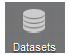 button. When the button is clicked, the widget is opened and it displays the list of available datasets. Each dataset is represented by its name and the number of items it contains. 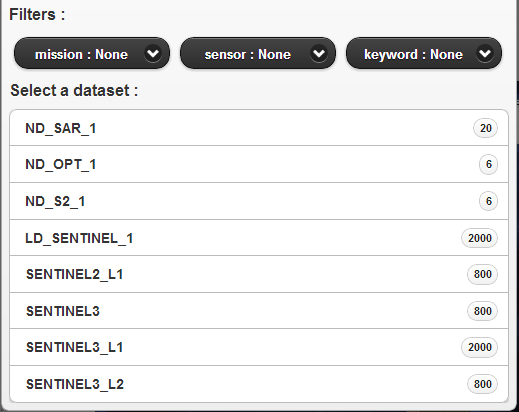
If there where a connection problem with the server an error message is spawned and the user is notified. The datasets button is then disabled. If the server sends no datasets, a notification message is displayed inside the dataset selection widget.
To select a dataset, the user has to scroll out the list and choose the dataset by clicking on the list entry. It is also possible to filter the available list of datasets by the means of the filter combo boxes. The filtering criteria are received from the server, but they should mainly contain : mission, sensor and keywords. 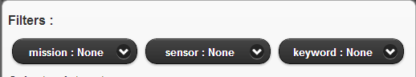
By default, all the criteria are set to "None". As soon as a criteria is chosen in one of the combo boxes, the datasets are filtered and the list is updated, taken into account the other combo boxes selected criteria.
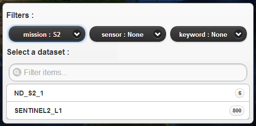Here is an examaple of the mission and sensor criteria set to S2 and OPT.
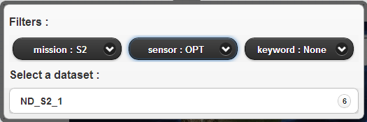In order to disable the filtering for a criterion, set back the selected option to "None".
Search Criteria
Once a dataset has been selected, to set the search criteria, the user has to click on the button 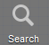 on the toolbar. The search criteria widget is then displayed. 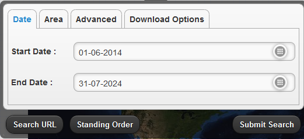
It is composed of several tabs, each tab displays one search criteria type. Each button on the footer has his own role.
The Search URL button
 ,
when clicked, displays the openSearch url which will be
submitted.
,
when clicked, displays the openSearch url which will be
submitted.
The Standing Order button 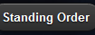, when clicked, displays the Standing Order Widget. See Standing Order Data Access Request. The Submit Search button submits the search request to the server to retrieve the results. See Search Results.
The Share button 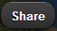, when clicked, displays a popup with the search shared url.
Copy the url and paste it in a new browser window, the search widget is displayed with all the search parameters set.The openSearch url to submit is created according to all the criteria selected inside the search criteria widget.
There search criteria types are :-
Date Criteria
They consist in the start and stop dates of the selected dataset. In order to change the selected date, click on the icon to display the calendar widget. 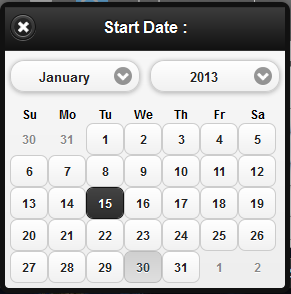 Choose the month and year using the combo boxes, then click on the day date. The calendar widget is closed and the chosen date does appear in the text field.
The same methods are used to modify both the start and stop dates.
It is also possible to change the dates using a time slider. To enable the time slider, check the checkbox 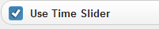. The search widget is then hidden and the timeSlider is displayed in the bottom of the map.
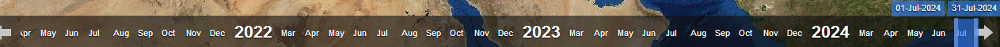Drag the time bar to move and change the time range.
It is also possible to move the time slider bar by clicking on the left and right arrows of the time slider. The bar is then moved respectively to the left or to the right. 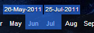Drag the bar left handle 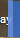 and the bar right 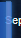 handle to enlarge the time range or to make it smaller.
Each time the bar is moved or resized, a search is launched and the results are displayed on the map.
Area Criteria
They consist in geographical criteria to be used in the search. To visualize the area widget, click on Area tab inside the search criteria widget. 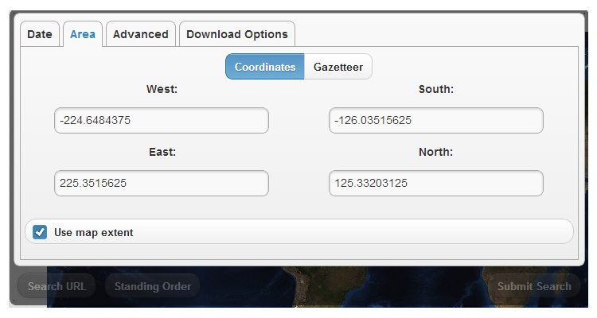
The area is created using either a rectangular zone, a polygon a Gazetteer or can be imported from a file.A rectangle zone or a BBOX is defined by :
- West: the maximum longitude
- East: the minimum longitude
- North: the maximum latitude
- South: the minimum latitude
Advanced Criteria
They are criteria relative to the selected dataset, so they change depending on the dataset chosen.
Different datasets can have the same criteria. It is a configuration matter on the server side.
To visualize the advanced criteria, click on Advanced Criteria tab inside the search criteria widget. 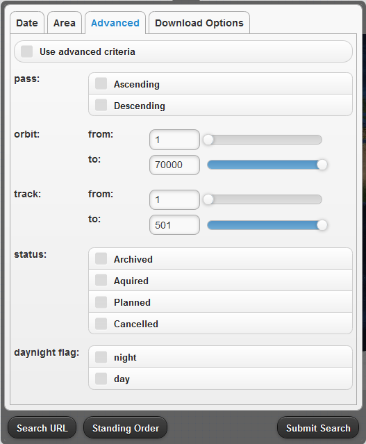 Each criterion is displayed by its name and a selection widget. Criteria having a range are displayed with sliders. Move the slider or set the value inside the text field to change the selected value. Criteria having a multiple selection possibilities are displayed with a list of checkboxes. Check or uncheck the check boxes to change the criterion selected value.If no dataset has been selected and the Advanced Criteria tab is selected a notification message is displayed to the user and no criteria is displayed.
Download Options
They are options relative to the selected dataset, so they change depending on the dataset chosen.
Different datasets can have the same download options. It is a configuration matter on the server side.
To visualize the download options, click on the Download Options tab inside the search criteria widget. 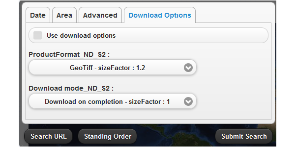 Each option is displayed by its name and a combobox containing the possible values. In order to make the selected download options taken into account in the search, check the 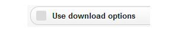check box.If no dataset has been selected and the Download Options tab is selected a notification message is displayed to the user and no download option is displayed.
-
Retrieve Products
Search Results
Once the search criteria have been filled in and the Submit Search button 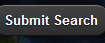 clicked, the search results table is displayed with the products metadata in the bottom of the home page. 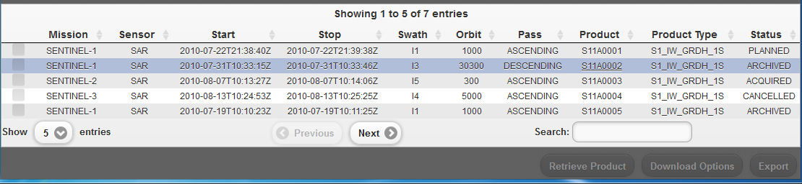
If no dataset has been selected and the 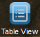 is clicked, the results table is empty.
The results table can be hidden by clicking on the button on the toolbar.
The combo box 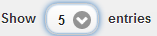 changes to number of result entries to display.
The button 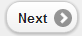 when clicked, goes to the next results page.
The button 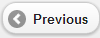 when clicked, goes to the previous results page.
The field allows to filter the results according to the text entred.
Direct Download
The Direct Download is a functionnality of the user client making the user download the retrieved products if they have a url starting with http or https. In the results table, downloadable products are highlighted by an underlined product identifier. 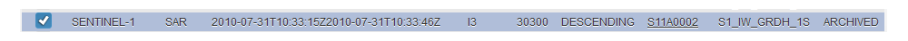
For a downloadable product, click on the product id. The direct download widget is opened. 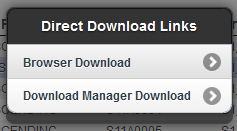.
According to the product url and to the download managers registered, the user can have the choice to either choose a download via:
- the browser
- or the local download manager.
If the "Browser Download" menu is selected, the browser starts the product download.
If the "Download manager Download" entry is selected and the download url is validated, a button Download is displayed. 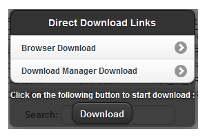
When the button is clicked, the download starts.
Simple Data Access Request
A Simple data Access Request is a request to the server issued from the results table with product items having a url but which are not necesseraly ready to be downloaded. This request aims to issue a download request for all the items included when they will be downloadable. A download manager has to be assigned to the request and will insure the download.
To include products in a Simple Data Access Request, check the products checkboxes in the results table.
If the Retrieve Product button 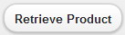 is still disabled this means that the products selected does not have a url. So change the selected products.
Click on Retrieve Product button to display the data access widget with the list of available download managers. 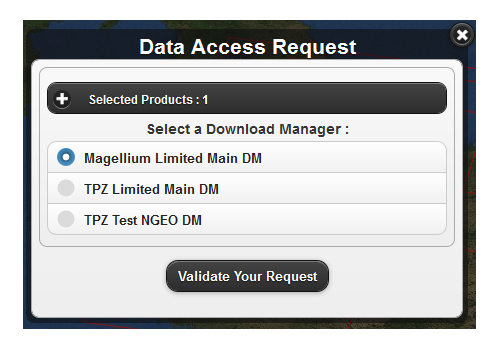
The "Validate Your Request" button makes the validation request sent to the server, and the server response displayed underneath the button. If the request is successfully validated, the estimated size of the products are displayed and a notification message confirms that the request has been acknowleged. The Validation button is renamed into 'Confirm Your Request': 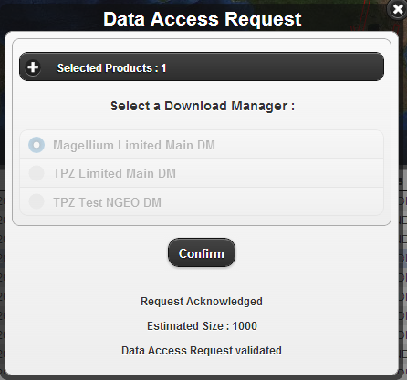
If the validation has failed an error message is dispalyed.
Click on Confirm Your Request button to submit, the confirmation request to the server. The server response is displayed underneath the button. If the request has been successfully confirmed, the request is being processed, unless an error message is dispalyed. 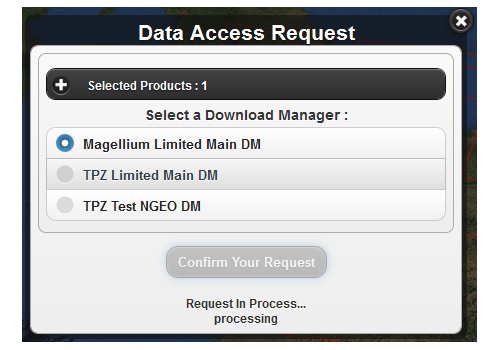
The close icon 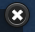 aims to close the widget.
Standing Order Data Access Request
A Standing Order Data Access Request allows the user to schedule a search either by time or data criteria in order to retrieve and download products. Thus, a download manager has to be assigned to the request and will insure the download.
This functionnality is available from all the tabs of the search criteria Widget.
First of all, click on the Standing Order button to display the data access widget with the scheduling options. 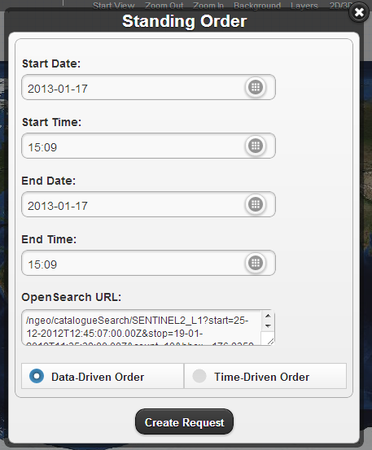
The "Data-driven Order" radio button is selected by default to submit a data-driven Standing Order
Fill in the fields and click on the "Create Request" button. Then the list of available download managers is displayed. 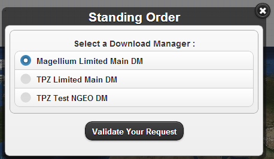
The "Validate Your Request" button makes the validation request sent to the server, and the server response is displayed underneath the button. If the request is successfully validated, a notification message confirms that the request has been acknowleged. The validation button is renamed into "Confirm Your Request" 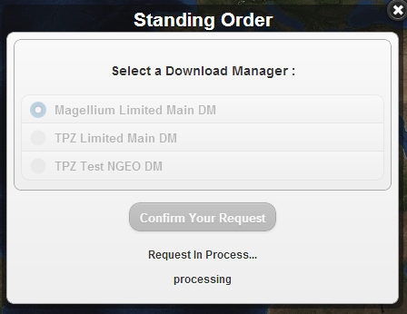
If the validation has failed an error message is dispalyed.
Click on Confirm Your Request button to submit, the confirmation request to the server. The server response is displayed underneath the button. If the request has been successfully confirmed, the request is being processed, unless an error message is dispalyed. 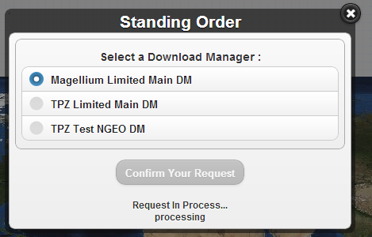
The close icon aims to close the widget.
To submit a time-driven standing order click on the Time Driven radio button 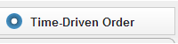 and fill in the additionnal time-driven scheduling options and follow the same steps than the data-Driven Standing Order. 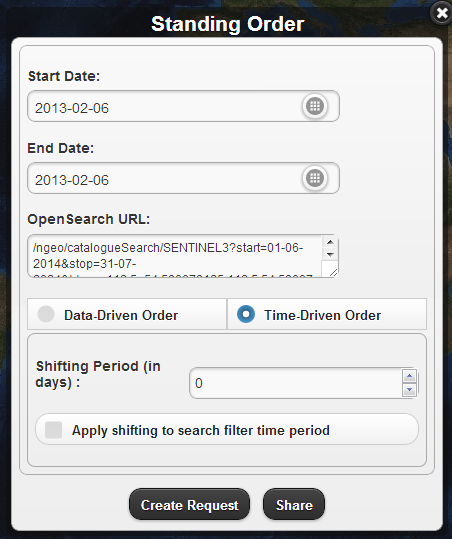
 .
.